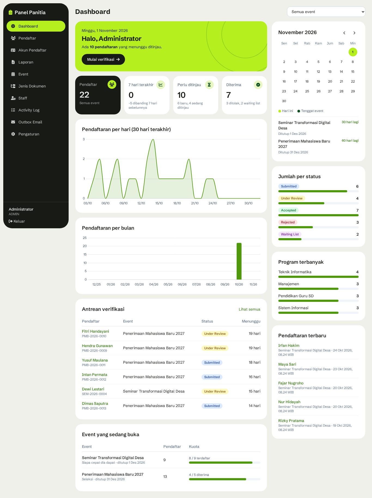
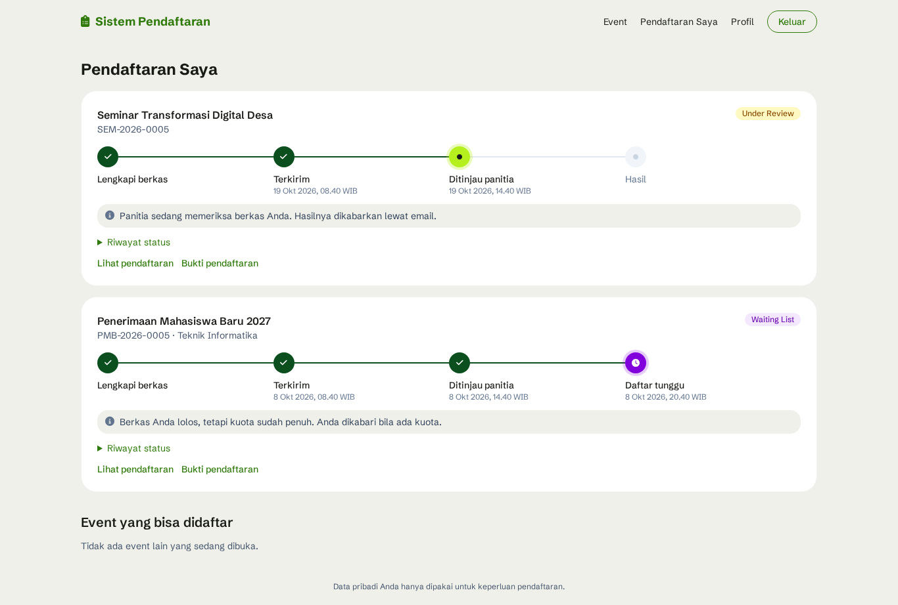
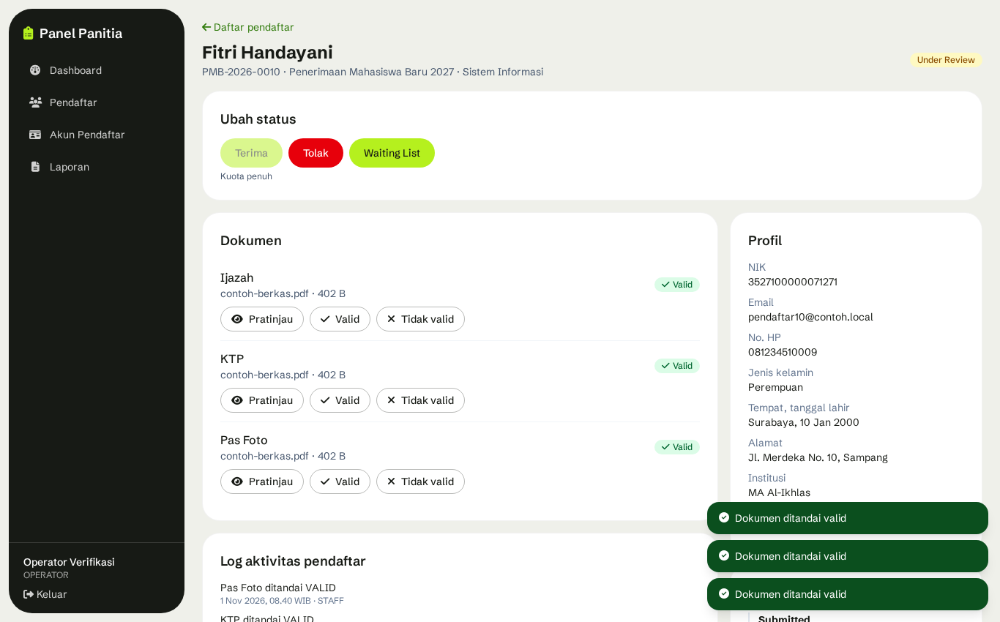
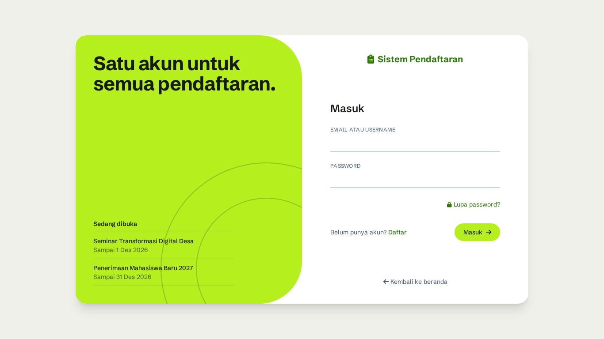
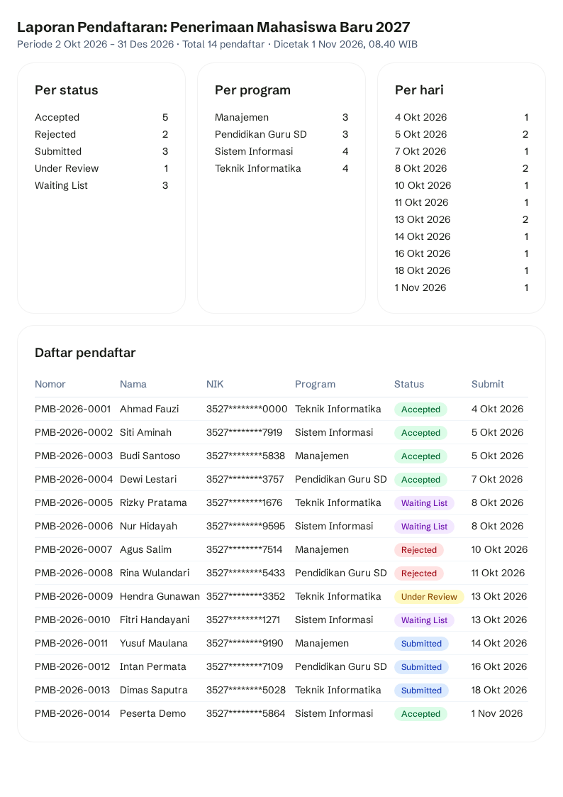

Sistem Pendaftaran Multi-Event
Aplikasi pendaftaran online: satu akun peserta untuk banyak event (PMB, pelatihan, seminar, kegiatan). Panitia memverifikasi berkas, peserta memantau tahapannya, dan setiap perubahan status dikabarkan lewat email.
- Modul backend
- 11
- Tabel database
- 15
- Operasi API
- 63
- Test otomatis lolos
- 50 / 50
- Langkah demo lolos
- 20 / 20
Masalah yang diselesaikan
- Peserta tidak mengisi data berulang. Akun dibuat sekali, lalu dipakai untuk mendaftar event apa pun.
- Kuota tidak terlampaui walau banyak orang mengirim di detik yang sama.
- Peserta tahu posisinya. Tahapan, catatan panitia, dan berkas yang perlu diganti terlihat di satu halaman.
- Panitia punya jejak kerja. Setiap perubahan status tercatat di riwayat, activity log, dan email.
Perubahan dari spesifikasi dosen
Spesifikasi asli memakai Google Apps Script. Sembilan halaman yang diminta tetap ada, tetapi fondasinya diganti agar aturan kuota dan relasi data bisa dijamin database.
| Spesifikasi | Di sistem ini | Alasan |
|---|---|---|
Apps Script, google.script.run | Bun, Hono, REST API | Bisa diuji per endpoint |
| Google Sheets | PostgreSQL, Drizzle ORM | Relasi, transaksi, constraint unik di database |
| Google Drive | RustFS (S3), cadangan disk lokal | Bucket privat, driver bisa diganti tanpa ubah frontend |
CONFIG satu baris | Tabel events | Banyak event bisa buka bersamaan |
REGISTRANTS | participants + registrations | Data orang tidak ditulis ulang per event |
| Cek status dengan nomor + token | Login akun peserta | Lebih aman, semua pendaftaran di satu tempat |
LockService | Transaksi + SELECT ... FOR UPDATE | Kuota dan nomor registrasi tidak bisa dobel |
MailApp | SMTP lewat outbox, diatur dari panel | Pendaftaran tetap berhasil walau email sedang gagal |
| Bootstrap 5, palet navy-biru | Tailwind CSS, palet hijau | Preferensi tampilan. Warna ada di satu file, jadi mudah dikembalikan |
Perlu dikonfirmasi ke dosen: palet warna spesifikasi diganti dengan hijau. Warna badge status tetap sesuai rencana awal.
Sembilan halaman spesifikasi
| Halaman spesifikasi | Alamat |
|---|---|
| Landing Page | / |
| Formulir Pendaftaran | /me/registrations/:id |
| Cek Status | /me |
| Login Admin | /login, satu halaman untuk semua akun |
| Dashboard Admin | /admin |
| Manajemen Pendaftar | /admin/registrations |
| Detail Pendaftar | /admin/registrations/:id |
| Pengaturan Pendaftaran | /admin/events, /admin/document-types, /admin/settings |
| Laporan Pendaftaran | /admin/reports |
Pengguna dan hak akses
Hak akses dicek di backend pada setiap endpoint. Tombol yang disembunyikan di layar hanya untuk kenyamanan.
| Aksi | Publik | Peserta | Operator | Admin |
|---|---|---|---|---|
| Lihat event yang dibuka | Ya | Ya | Ya | Ya |
| Daftar event, unggah berkas, pantau tahapan | — | Ya | — | — |
| Dashboard, daftar pendaftar, export | — | — | Ya | Ya |
| Verifikasi berkas, ubah status | — | — | Ya | Ya |
| Koreksi status final (alasan wajib) | — | — | — | Ya |
| Kelola event, staff, pengaturan email | — | — | — | Ya |
| Activity log global, outbox email | — | — | — | Ya |
Login hanya satu halaman. Isian yang memuat @ diperiksa ke akun peserta, selain itu ke akun staff. Tabel, cookie, dan masa sesi tetap terpisah.
Arsitektur
Satu bahasa dari ujung ke ujung: TypeScript di Bun untuk API dan Vue 3 untuk frontend. Skema validasi Zod dan tabel transisi status ditulis sekali lalu dipakai keduanya.
Modular monolith
Backend satu proses dan satu database, tetapi dibagi per domain. Batas antar modul ditegakkan lint: modul lain hanya boleh dipakai lewat index.ts, dan arah dependensi tidak boleh melingkar.
| Modul | Tanggung jawab |
|---|---|
audit | Mencatat activity log dari event modul lain |
settings | Pengaturan aplikasi dan email, enkripsi nilai rahasia |
notifications | Outbox, worker, template email |
auth | Sesi, login, OTP, rate limit |
participants, staff | Akun peserta dan akun panitia |
events | Event, program, syarat dokumen, kunci kuota |
documents | Unggahan sementara, konfirmasi, verifikasi berkas |
registrations | Draft, submit, nomor registrasi, status dan riwayatnya |
review | Use case staff: tinjau, terima, tolak, waiting list, koreksi |
reports | Dashboard, export, laporan; hanya membaca |
Struktur folder
Proyek ini satu repository dengan tiga bagian: API, web, dan aturan yang dipakai bersama keduanya. Kode yang ditulis sendiri hanya sekitar 3,7 MB; selebihnya library di node_modules.
pendaftaran/ ├─ apps/ │ ├─ api/ Backend: Bun + Hono │ │ ├─ src/ │ │ │ ├─ main.ts Titik mulai server API │ │ │ ├─ worker.ts Pengirim email dan pembersihan unggahan │ │ │ ├─ app.ts Merakit semua route, header keamanan, /docs, /health │ │ │ ├─ modules/ 11 modul, satu folder per domain │ │ │ ├─ shared/ Koneksi database, storage, kripto, event bus, helper route │ │ │ └─ scripts/ migrate, seed, init-storage, uji presigned │ │ ├─ drizzle/ File migration SQL hasil generate dari tabel │ │ └─ test/ 50 test otomatis │ └─ web/ Frontend: Vue 3 + Tailwind │ └─ src/ │ ├─ features/ Halaman per fitur: auth, events, registrations, reports, review, settings, staff │ ├─ components/ Dipakai ulang: ui (tombol, dialog), form (input, unggah), data (badge, paginasi) │ ├─ composables/ Logika dipakai ulang: useApi, useAuth, useFileUpload, useUrlFilters │ ├─ layouts/ PublicLayout (menu atas), AdminLayout (sidebar) │ ├─ router.ts Daftar alamat halaman │ └─ styles.css Warna dan font, satu tempat ├─ packages/shared/ Aturan bersama: status, tabel transisi, validasi NIK dan file ├─ nginx/ Konfigurasi pintu masuk: batas 6 MB, Host, IP klien ├─ docker/ Pembuatan database uji ├─ docs/ Halaman penjelasan ini ├─ e2e/ Checklist demo 20 langkah di browser ├─ Dockerfile Cara membangun image aplikasi ├─ docker-compose.yml Menjalankan nginx, api, postgres, rustfs, mailpit ├─ eslint.config.js Aturan batas antar modul ├─ package.json, bun.lock Daftar library dan versinya yang terkunci ├─ .env.example Contoh pengaturan; salinannya .env berisi rahasia dan tidak masuk git ├─ PRD — Sistem ... .md Spesifikasi ├─ PROGRESS.md Catatan pengerjaan per tahap └─ README.md Cara instalasi, pengujian, dan persiapan presentasi
Isi satu modul backend
Semua modul memakai pola yang sama, jadi cukup paham satu modul untuk membaca yang lain. Contohnya modules/registrations/:
| File | Isi |
|---|---|
registrations.table.ts | Definisi tabel database milik modul |
registrations.service.ts | Logika bisnis dan query: draft, submit, nomor registrasi, perubahan status |
registrations.routes.ts | Alamat API, validasi input, dan hak akses |
index.ts | Satu-satunya pintu bagi modul lain. Lint menolak import ke file lain di dalam modul |
Tidak semua modul punya keempat file. review tidak punya tabel, dan reports hanya membaca.
Mau mengubah sesuatu, buka di mana
| Yang ingin diubah | Lokasi |
|---|---|
| Warna dan font | apps/web/src/styles.css |
| Tampilan satu halaman | apps/web/src/features/<fitur>/ |
| Menu sidebar atau menu atas | apps/web/src/layouts/ |
| Aturan status dan validasi NIK atau file | packages/shared/src/index.ts |
| Aturan kuota dan submit | apps/api/src/modules/registrations/registrations.service.ts |
| Syarat menerima atau menolak pendaftar | apps/api/src/modules/review/review.service.ts |
| Isi email | apps/api/src/modules/notifications/notifications.templates.ts |
| Kolom tabel database | modules/<modul>/*.table.ts, lalu bun run db:generate dan db:migrate |
| Data awal demo | apps/api/src/scripts/seed.ts |
Folder yang tidak perlu dibuka
| Folder atau file | Isi | Masuk git? |
|---|---|---|
node_modules/ | Library pihak ketiga, dibuat ulang dengan bun install | Tidak |
apps/web/dist/ | Hasil build frontend | Tidak |
.env | Password dan kunci rahasia. Jangan dibagikan | Tidak |
.git/ | Riwayat perubahan kode | Tidak |
.claude/ | Folder kerja alat bantu pengembangan, bukan bagian aplikasi | Tidak |
Model data
uploads, document_types, staff_users, sessions, email_otps, notifications, activity_logs, dan settings, sehingga total 15 tabel.Aturan duplikat ada di database, bukan hanya di kode: satu NIK satu akun, dan satu akun hanya satu pendaftaran per event. Event berbeda tidak saling menghalangi.
Alur pendaftaran
- Peserta membuat akun dan memverifikasi email dengan OTP 6 digit (berlaku 10 menit, maksimal 5 percobaan).
- Peserta memilih event, memilih program bila diminta, lalu mengunggah dokumen sebagai draft.
- Saat dikirim, sistem mengecek periode, dokumen wajib, dan kuota, lalu memberi nomor seperti
SEM-2026-0007. Email bukti masuk antrean. - Panitia meninjau tiap dokumen. Dokumen yang ditandai tidak valid dikabarkan lewat email dan bisa diganti peserta.
- Panitia menerima, menolak, atau memasukkan ke waiting list.
INVALID_TRANSITION. Garis putus-putus hanya untuk admin. Waiting list hanya berlaku pada mode seleksi.Peserta melihat alur ini sebagai empat tahap: Lengkapi berkas, Terkirim, Ditinjau panitia, Hasil. Tiap tahap menampilkan waktu, disertai satu kalimat tentang apa yang perlu dilakukan.
Kuota dan konkurensi
| Siapa cepat dia dapat (FCFS) | Seleksi | |
|---|---|---|
| Contoh | Seminar, pelatihan | PMB |
| Slot dihitung dari | Semua status kecuali Draft dan Rejected | Status Accepted saja |
| Dicek saat | Peserta mengirim | Panitia menekan Terima |
| Kalau penuh | Ditolak, draft tetap tersimpan | Terima terkunci; pilihannya Waiting List atau Tolak |
Dua orang bisa mengirim di milidetik yang sama. Tanpa pengaman, keduanya membaca sisa kuota 1 dan keduanya lolos. Sistem mencegahnya dengan mengunci baris event selama transaksi, sehingga permintaan berjalan bergiliran. Nomor registrasi diambil di transaksi yang sama, jadi draft tidak menghabiskan nomor.
Bukti: 50 pengiriman paralel ke event berkuota 10 menghasilkan tepat 10 berhasil dan 40 ditolak QUOTA_FULL, dengan nomor unik dan berurutan. Saat kunci sengaja dimatikan, test ini gagal dengan hanya 3 yang berhasil, yang menunjukkan test benar-benar mendeteksi hilangnya kunci.
Unggah berkas
- Browser meminta target unggah, lalu mengirim file ke key sementara lewat URL bertanda tangan. File tidak melewati server aplikasi.
- Browser mengonfirmasi ke API. API membaca file, memeriksa ukuran (maksimal 5 MB) dan jenis dari isinya, bukan dari nama file.
- API menulis byte yang sudah diperiksa ke key final, lalu mengganti berkas di database setelah membaca ulang status pendaftaran.
- Setelah transaksi selesai, objek lama dan objek sementara dihapus.
Urutan ini menutup dua celah: URL bertanda tangan bisa dipakai ulang selama 5 menit, tetapi hanya menulis ke key sementara yang sudah tidak terpakai. File pengganti yang gagal diperiksa juga tidak menghapus berkas lama. EXE yang diganti nama menjadi .jpg dan ZIP yang diganti nama menjadi .docx ditolak.
Keamanan
Aplikasi menyimpan NIK dan dokumen identitas, jadi mengikuti semangat UU 27/2022 tentang Pelindungan Data Pribadi: akses seminimal mungkin, dan akses sensitif tercatat.
| Area | Ketentuan |
|---|---|
| Password | Argon2id |
| Sesi | Cookie httpOnly; database hanya menyimpan hash token. 7 hari untuk peserta, 12 jam untuk staff |
| Rate limit | Login 5 percobaan per 15 menit per akun + IP; OTP 1 per 60 detik dan 5 per jam; submit 5 per menit |
| Data pribadi | NIK tersamar di daftar (3527********0001); utuh hanya di detail dan export; setiap export tercatat |
| Berkas | Bucket privat, URL berumur 5 menit, jenis dicek dari isi file |
| Akses silang | Peserta yang membuka pendaftaran orang lain mendapat 404, jadi keberadaan data tidak bocor |
| Rahasia | Password SMTP dienkripsi AES-256-GCM dan tidak pernah dikirim ke browser |
Tampilan
Semua gambar di bawah memakai data dummy. Halaman peserta dioptimalkan untuk HP 360 px, sedangkan panel panitia untuk desktop.





Pengujian
| Pemeriksaan | Hasil | Cara |
|---|---|---|
| Test backend | 50 lolos, 0 gagal | bun test terhadap Postgres dan RustFS sungguhan, database uji terpisah |
| Checklist demo | 20 dari 20 langkah | Browser Chromium sungguhan lewat Nginx, di stack terpisah |
| Kinerja daftar + filter, 10.000 data | maksimal 43 ms | Target PRD di bawah 500 ms |
| Presigned URL lewat Nginx | lolos | URL dirusak, tanpa tanda tangan, dan host salah ditolak 403; file 7 MB ditolak 413 |
| Lint batas modul | bersih | Pelanggaran yang sengaja dibuat tertangkap |
Yang diuji test otomatis
- Konkurensi: rebutan kuota, dua staff pada pendaftaran yang sama, Terima bersamaan dengan penandaan dokumen tidak valid.
- Semua transisi status di luar tabel ditolak.
- Berkas: file palsu, file terlalu besar, PUT ulang setelah konfirmasi, penggantian yang gagal.
- Hak akses: operator ke endpoint admin, peserta ke data orang lain, Origin asing.
- Akun: OTP salah dan kedaluwarsa, blokir login, reset password mencabut semua sesi.
Pengujian di browser juga menemukan bug yang tidak tertangkap test backend, misalnya urutan dokumen yang berubah setelah diverifikasi. Bug itu sudah diperbaiki dan kini punya test sendiri.
Batasan yang perlu disampaikan
- Gmail asli belum diuji. Pengiriman diuji ke Mailpit, server email untuk pengembangan yang menampung semua email di satu halaman. Pengaturan Gmail tersedia di panel.
- HTTPS belum diuji. Demo berjalan di HTTP pada jaringan lokal.
- Satu instance. Rate limit disimpan di memori. Worker sebagai container terpisah sudah disiapkan tetapi belum diuji.
- Access key RustFS belum dibuat khusus aplikasi. Yang dipakai kredensial root dengan nilai acak.
- Di luar lingkup: pembayaran, SSO, form builder per event, aplikasi mobile, dan antrean untuk trafik sangat besar.
- Direncanakan berikutnya: OAuth 2.0 untuk email, kuota per program, template email yang bisa diedit, backup terjadwal.
Urutan demo
Urutan ini memakai kuota seed yang sengaja dibuat hampir penuh, sehingga demo kuota penuh mudah ditunjukkan. Data seed perlu direset sebelum presentasi.
| # | Tunjukkan | Poin yang dijelaskan |
|---|---|---|
| 1 | Peserta baru daftar akun, OTP, verifikasi | NIK unik, OTP terbatas percobaan |
| 2 | Daftar event seleksi: program, unggah, kirim | Jenis file dicek dari isi; nomor registrasi otomatis |
| 3 | Akun yang sama daftar seminar FCFS | Satu akun untuk banyak event, profil tidak diisi ulang |
| 4 | Akun lain membuka seminar yang penuh | Kuota dikunci di transaksi |
| 5 | Operator menandai satu berkas tidak valid | Email ke peserta, peserta mengganti berkas, tahapan berubah |
| 6 | Operator menerima hingga kuota seleksi penuh | Terima terkunci, pendaftar berikutnya ke Waiting List |
| 7 | Dashboard, export Excel, laporan cetak | Angka dashboard sama dengan daftar; export tercatat |
| 8 | Admin membuat event dan mengubah SMTP | Tanpa ubah kode; email uji sebelum disimpan |
| 9 | Activity log | Semua aksi di atas tercatat |
Pertanyaan yang mungkin diajukan dosen
- Kenapa tidak memakai Google Sheets seperti spesifikasi?
- Sheets tidak punya transaksi dan constraint unik. PostgreSQL menjamin dua pengiriman bersamaan tidak melebihi kuota dan NIK tidak bisa dobel, langsung di level database.
- Bagaimana kuota dijamin tidak terlampaui?
- Baris event dikunci dengan
SELECT ... FOR UPDATEselama transaksi, sehingga pengiriman berjalan bergiliran. Sudah dibuktikan dengan 50 pengiriman paralel ke kuota 10. - Bagaimana kalau email sedang gagal?
- Pendaftaran tetap berhasil. Email masuk tabel outbox di transaksi yang sama, lalu worker mengirimnya, mencoba ulang 3 kali dengan jeda 1, 5, dan 15 menit. Bila tetap gagal, admin bisa mengirim ulang dari panel.
- Bagaimana kalau file berbahaya diganti namanya?
- Jenis file dibaca dari isi (magic bytes), bukan nama. File yang tidak lolos dihapus dan ditolak, dan berkas lama tetap utuh.
- Kenapa modular monolith, bukan microservices?
- Untuk skala ini satu proses lebih sederhana dan transaksi lintas modul tetap mudah. Batas modul dijaga lint, jadi modul seperti
notificationsbisa dipisah nanti bila memang perlu. - Bagaimana data pribadi dilindungi?
- NIK tersamar di daftar, bucket privat, URL berkas berumur 5 menit, password Argon2id, dan setiap export tercatat di activity log.
- Kenapa peserta login, bukan cek status dengan nomor dan token?
- Peserta tidak perlu menyimpan token per pendaftaran, dan semua pendaftaran terlihat di satu tempat. Cek status tetap ada sebagai halaman Pendaftaran Saya.
- Bagaimana sistem dikembangkan kalau peserta bertambah banyak?
- Langkah pertama memisahkan worker ke container sendiri, lalu menjalankan API beberapa instance dengan rate limit dipindah ke Valkey. Antrean waiting room dipertimbangkan bila trafik mencapai ribuan pendaftar dalam hitungan detik.